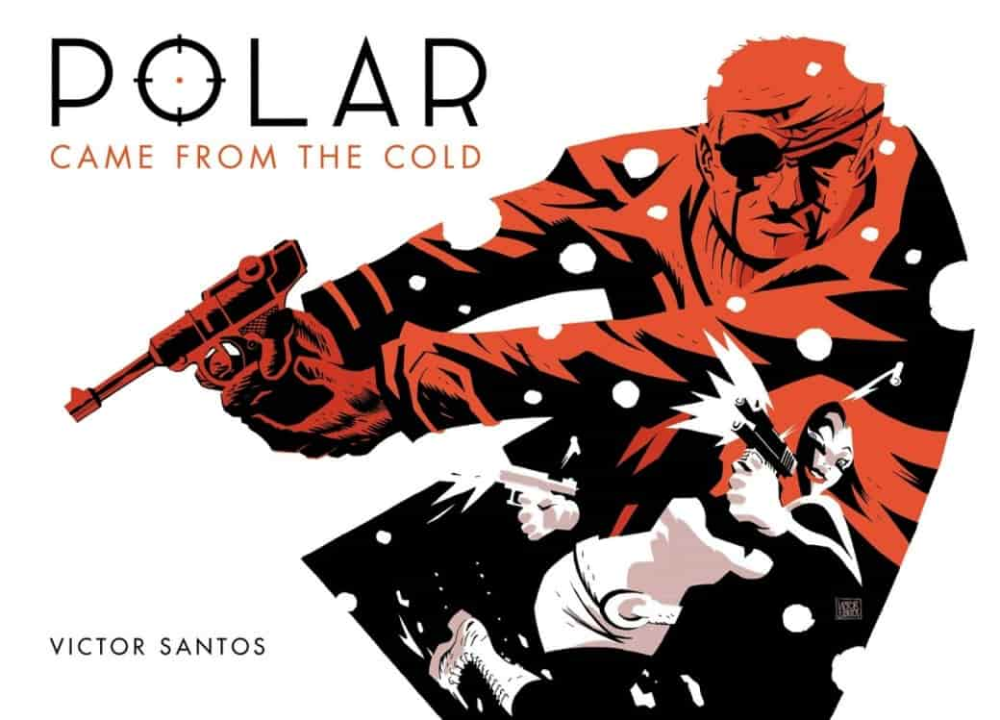
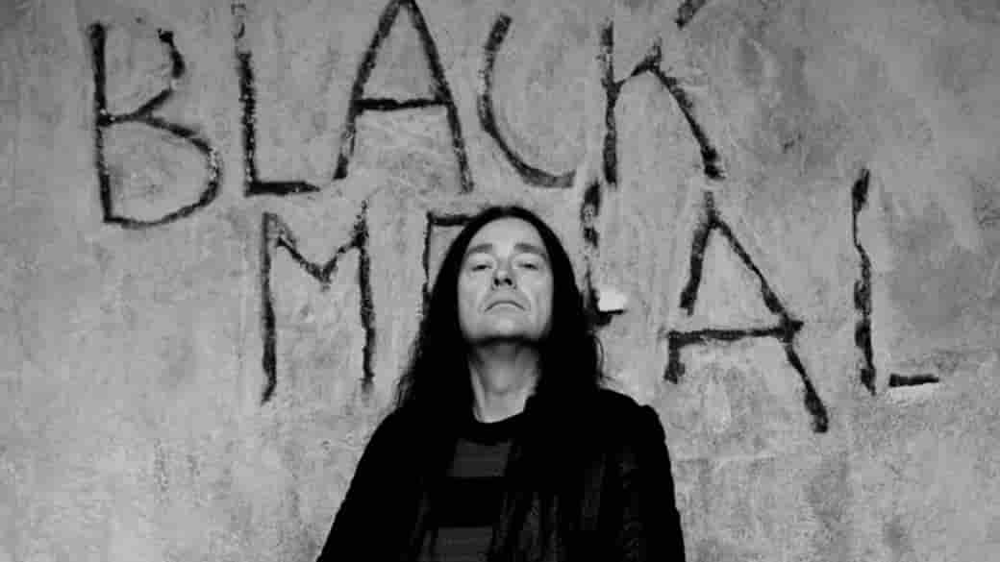
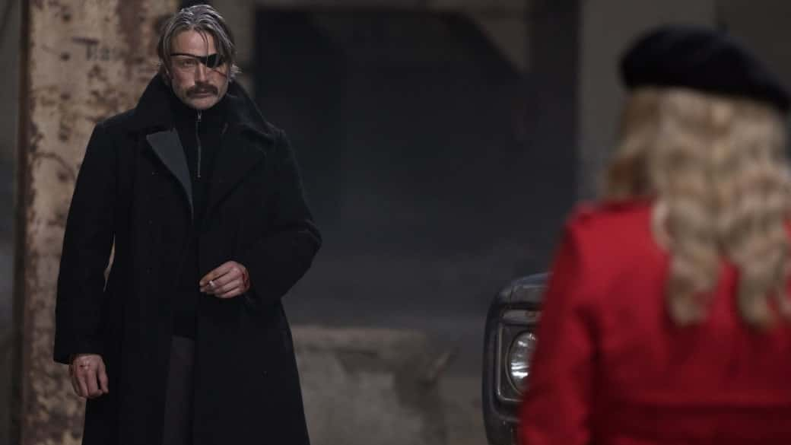
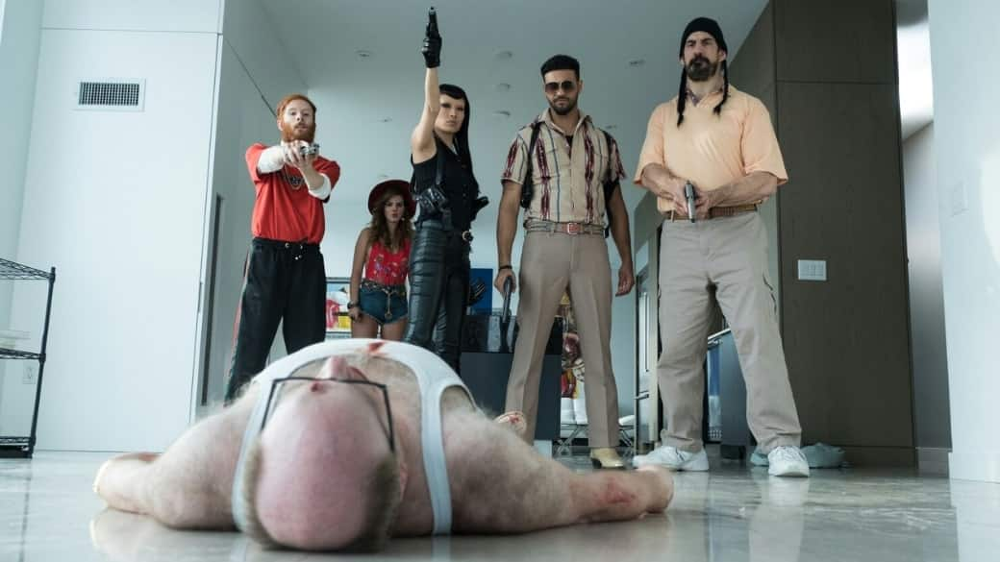
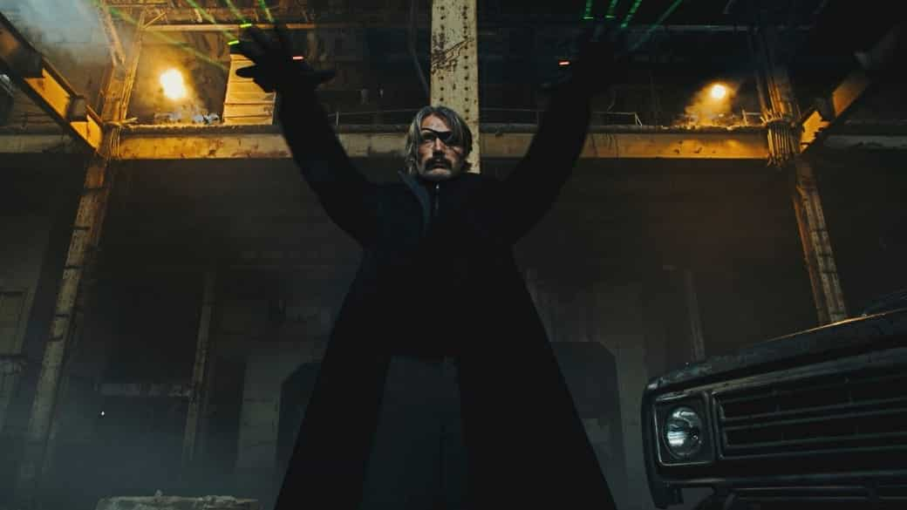

Для потокового сервиса Netflix адаптировать комиксы для экранов стало делом привычным (примеров привести можно много — от «Сорвиголовы» до «Конца ***ого мира»). Но в этот раз они решили поиграть с короткой формой и сняли фильм по веб-комиксу 2012 года, написанному и нарисованному Виктором Сантосом. Первоисточник (точнее первая арка, которая и легла в основу фильма) повествует о киллере по прозвищу Черный Кайзер, который разбирается с людьми, решившими его убрать.
Комикс был скуп на цвет и текст (до переиздания 2013 года от Dark Horse в нем вообще не было диалогов), а потому читался быстро и легко. Визуально Polar напоминает «Город грехов», но сюжетно он гораздо проще. А фильм и вовсе решил пойти другим путем — выкрутив яркость на максимум и заставив персонажей очень много говорить.
В режиссерское кресло проекта попал шведский клипмейкер Йонас Окерлунд, чей кинематографический опыт широкий зритель мог и не заметить, а он есть. В далеком 2002 году он снял забавный наркоманский фильм «Высший пилотаж», который, несмотря на неплохие оценки, с треском провалился, и Йонас надолго отложил свои планы относительно большого кино. Зато в первых месяцах 2019 у него сразу два фильма — «Полярный» и триллер/ужасы «Властелины хаоса». Хорошее начало года.
Но перейдем к главному — самому фильму. От оригинального комикса остались базовая концепция, некоторые персонажи и сцены, а потому о нем можно забыть. Суровая история о крутом наемнике, которого кинули, превратилась в яркий и трэшовый комединый боевик.
И комедии в нем едва ли не больше, чем экшена. Первая сцена задает тон всей картине. Ощущение, что смотришь «Адреналин» без странной операторской работы и Стэйтема. Настолько все вычурно, пошло, да и персонажи буквально фрик на фрике. К тому же у фильма очень странная цветокоррекция: трава своей зеленью может составить конкуренцию всей цветовой палитре «Аннигиляции».
В центре сюжета — элитная организация наемных убийц, которая начинает страдать от того, что кто-то убирает ее бывших сотрудников. Черному Кайзеру, сыгранному харизматичным Мадсом Миккельсеном (бедняга уже в третьем фильме с изуродованным глазом), поручено разобраться с этой проблемой. Герою осталось две недели до пенсии, и он не горит большим желанием этим заняться, но его все же убеждают. И с этого момента у картины начинается раздвоение личности, которое с некоторыми зрителями может сыграть злую шутку.
Первая личность — это классический суровый боевик с крутым киллером, убивающим всех, решивших перейти ему дорогу. Мадс прекрасен и внушителен в боевых сценах. А уж когда с одним глазом, так и вовсе достойный наследник культовых Снейков Кодзимы и Карпентера. Его даже снабдили не самой плохой личной драмой, которая вполне работает при участии персонажа Ванессы Хадженс.
Вторая личность — адреналиноподобные персонажи и юмор. Отрицательные герои представлены здесь максимально чудаковатыми: огненно-рыжий русский киллер Алексей, который ходит в кофте с большой надписью на русском «АДИДАС», стиляга-снайпер, femme fatale в кубе, яростная азиатка со странным мейкапом, туповатый гигант и правая рука их босса — лесбиянка, меняющая цвет волос и прическу перед каждым появлением на экране. Их начальник выглядит как неудачный клон Элтона Джона — впадающий в истерики и щеголяющий в пестрых нарядах, не забывая материть всех вокруг с истинным британским акцентом.
Сюжетная линия с приключениями этого парада уродов, ищущим главного героя — это чистая комедия. Им постоянно попадаются персонажи еще более отбитые, чем они сами, что порождает множество забавных моментов. И тут возникает вопрос: это то, чего вы хотите от фильма про крутого киллера? Можно смириться и принять это как неожиданный бонус, а можно серьезно разочароваться, если вы ждали аналог «Джона Уика».
Можно было бы занести большое количество юмора в минус, но в фильме действительно много хорошо работающих шуток. Да и мотивация для убийства главного героя это та еще хохма. Правда, одна комедийная сцена заставила вспомнить роль Миккельсона в фильме под названием «Охота». И вот воспоминания об этой драме немного сбили градус юмора.
Бонусом к комедии идут нечастые, но отлично поставленные экшен-сцены. Они уж точно оставят след в памяти своей кровожадностью и хореографией. А что еще нужно от развлекательного фильма? Темп у него хорошо выдержан. Когда нет битв, включается комедия, да и проседающих моментов фактически нет. Только дебильные злодеи и сама клиповая манера могут отпугнуть зрителя.
«Полярный» — пестрый и смешной экшен-фильм, который не поражает воображение, но хорошо работает как на территории комедии, так и брутального боевика, хотя всеобщая придурковатость и фарс происходящего способны подпортить впечатление зрителю, который по трейлеру рассчитывал на нечто иное. Но одно ясно точно — в кинематографе стало на одного крутого и харизматичного наемного убийцу больше.